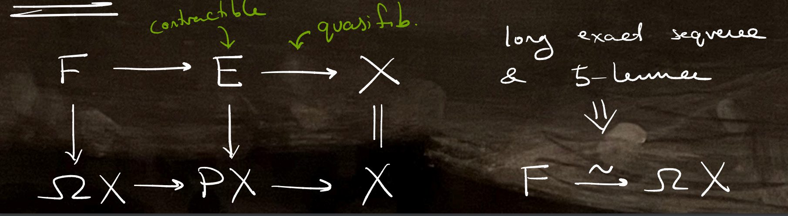

Back to Home
------------------------------
Research talks
Coherent tensor products of (ABS) Clifford modules (Elliptic objects, von Neumann algebras, and functorial field theory (gong show), Lausanne, CH; board; July 2026)
K-theory, spin bordism, coherence, and Reality (PhD defense talk, UIUC; notes; April 2026)
Spin bordism, Reality, and C*-algebras (BYU Topology seminar, Provo, UT; notes; November 2025)
Towards an equivariant splitting of Real spin bordism (AMS sectional meeting: Special session on homotopy theory, St. Louis, MO; notes/slides; October 2025)
Real spin bordism and orientations of topological K-theory (AMS sectional meeting: Special session on homotopy theory and algebraic K-theory, Lawrence, KS; notes/slides; March 2025)
Real spin bordism and orientations of topological K-theory (Topology seminar, UIUC; notes; October 2024)
Real spin bordism and orientations of topological K-theory (From analysis to homotopy theory (gong show), Greifswald, DE; slides; May 2024)
Expository talks
The Anderson--Brown--Peterson splitting of spin bordim (and Reality) (Graduate student homotopy theory seminar, UIUC; notes; September 2025)
Unifying the orientations of topological K-theory, and a nonexistence theorem (Graduate student homotopy theory seminar, UIUC; April 2025) [more expositional version of my talk in Lawrence, KS, above.]
Transfer systems in equivariant homotopy theory (Graduate student homotopy theory seminar, UIUC; notes; September 2024)
G-spectra II: duality, Wirthmüller isomorphism, spectra w/ G-action, fixed points, & tom Dieck splitting (Equivariant homotopy theory learning seminar, UIUC; notes - contains errors; February 2024)
The phony multiplication on Quillen's K-theory (Graduate student homotopy theory seminar, UIUC; notes; February 2024)
Higher semiadditivity (Telescope conjecture seminar, UIUC; notes; January 2024)
The homotopy fixed point spectral sequence for KUhC2 (Math 595, UIUC; notes; December 2023)
Real K-theory as a sheaf of spectra ( Twisted equivariant K-theory and TMF seminar , UIUC; September 2023)
Segal: Elliptic cohomology (Math 527, UIUC; notes; April 2023)
Superconnections and Thom classes (Graduate geometry and topology seminar, UIUC; April 2023)
K(1)-local homotopy theory (Chromatic homotopy theory reading group, UIUC; video, notes; March 2023)
Morava's orbit picture and Morava stabilizer groups (Chromatic homotopy theory reading group, UIUC; video, notes; March 2023)
Atiyah--Hirzebruch: Vector bundles and homogeneous spaces (Math 527, UIUC; notes; February 2023)
BP-theory and the Adams spectral sequence (Chromatic homotopy theory reading group, UIUC; video, notes; February 2023)
Clifford algebras, modules, and Morita theory (Dan's seminar on field theories, UIUC; notes; February 2023)
Proving Bott periodicity for homotopy theorists (Graduate student homotopy theory seminar, UIUC; notes; February 2023)
Thom classes in KO-theory (Math 533, UIUC; December 2022)
Atiyah--Bott--Shapiro: Clifford modules (Kan seminar, eCHT; November 2022)
Applications of spin geometry (Graduate geometry and topology seminar, UIUC; October 2022)
Twisted equivariant K-theory (Conformal field theory seminar, UIUC; notes; October 2022)
Power operations in K-theory (Graduate student homotopy theory seminar, UIUC; September 2022)
Equivariant K-theory (Conformal field theory seminar, UIUC; notes; September 2022)
A survey of characteristic classes (Graduate geometry and topology seminar, UIUC; April 2022)
Clifford algebras and KO-theory (Graduate geometry and topology seminar, UIUC; April 2022)
An introduction to 2-categories (Graduate student homotopy theory seminar, UIUC; March 2022)
Fiber integration (Differential cohomology seminar, UIUC; March 2022)
Homotopy invariant sheaves (Differential cohomology seminar, UIUC; February 2022)
An introduction to supermanifolds (Graduate geometry and topology seminar, UIUC; Novermber 2021)
Sheaves on stacks (TMF seminar, UIUC; October 2021)
Undergraduate research talks
On Ryser's conjecture and strengthenings thereof (New York combinatorics seminar, CUNY Graduate Center; slides; March 2019)